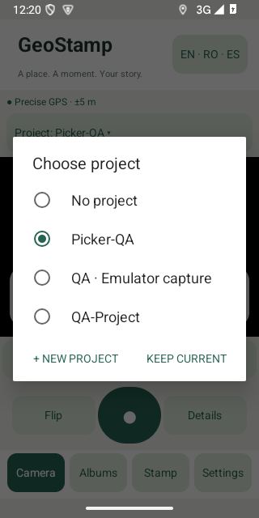

PRAXIS SCIENCE LAB / ANDROID
GeoStamp Camera
GPS photo stamps, project albums, street maps and local PDF exports.
In testing Not yet available on Google Play.
Give each photo a place and a purpose with GeoStamp Camera for Android 10 and later. Capture photos with coordinates, date, time, a project name and your own notes. Keep the original alongside a separately stamped copy. Import existing images using their own GPS and capture-date metadata when available.
Choose the active project directly in Camera. After capture or import, pick an existing project or create a new one on the spot. Edit a saved stamp to change its project, note, colors, text size or placement while preserving the original capture coordinates and time.
Explore geotagged photos on OpenStreetMap street maps. Add a map thumbnail to a saved photo, or enable the visible automatic camera map: it is included when already loaded, without making the shutter wait for internet. New map areas require a connection.
Filter project albums, select photos for PDF export, share stamped copies and back up or restore albums with a ZIP file saved to a location you choose. GPS accuracy is shown in metres, with an optional wait for a more precise fix. Quick Help explains the main workflows.
English, Romanian and Spanish are available. No app account is required. The current development build uses Google test advertisements in Albums; production advertising and a Google Play release are still being prepared.
Inside the app
Actual screenshots from version 0.3.2 (5).

Language
English by default; Romanian and Spanish available from the language button. Quick Help is available in all three languages.
Using the app
GPS accuracy depends on the device and surroundings; coordinates and device time are not certified evidence. The optional precise-GPS mode waits up to 30 seconds for a fix within 15 m and can be cancelled. Stamped exports are resized to at most 2400 pixels on the long edge; originals retain their resolution. Back up your albums before uninstalling. Street maps are provided on a best-effort basis, without satellite imagery or bulk offline downloads.
Praxis Science Lab is the publishing brand used by Traian Anghel. For support or privacy questions, email traiananghel@gmail.com. Include the app name and version. Do not send passwords, medical records, private recordings or other sensitive information.